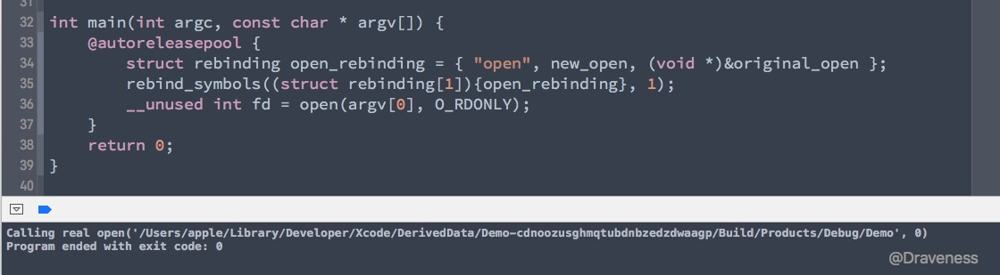
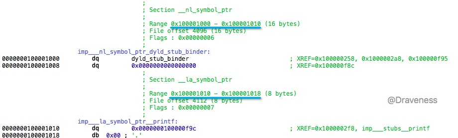
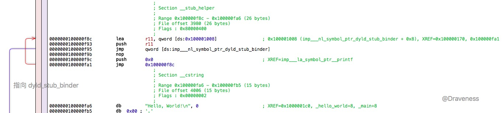
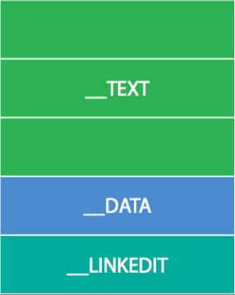
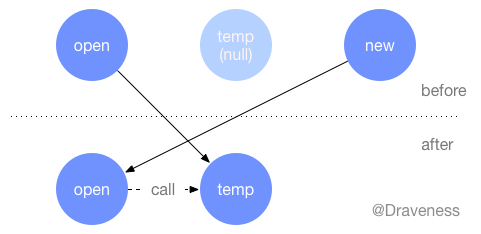
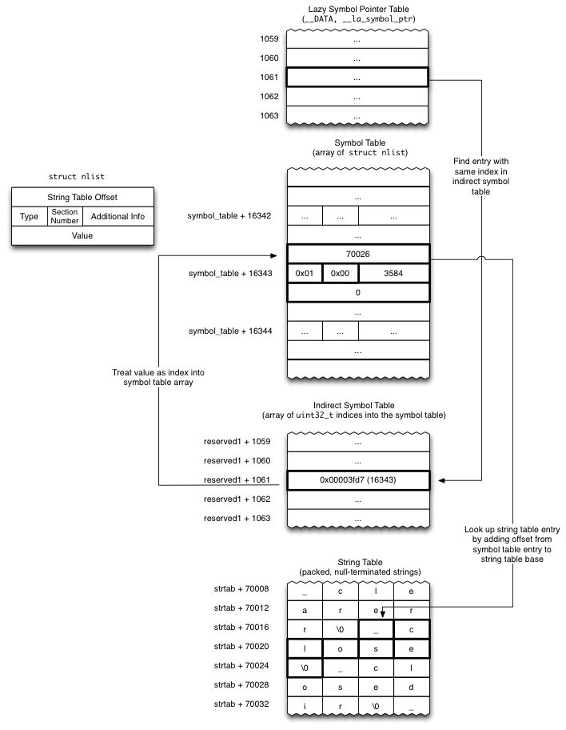
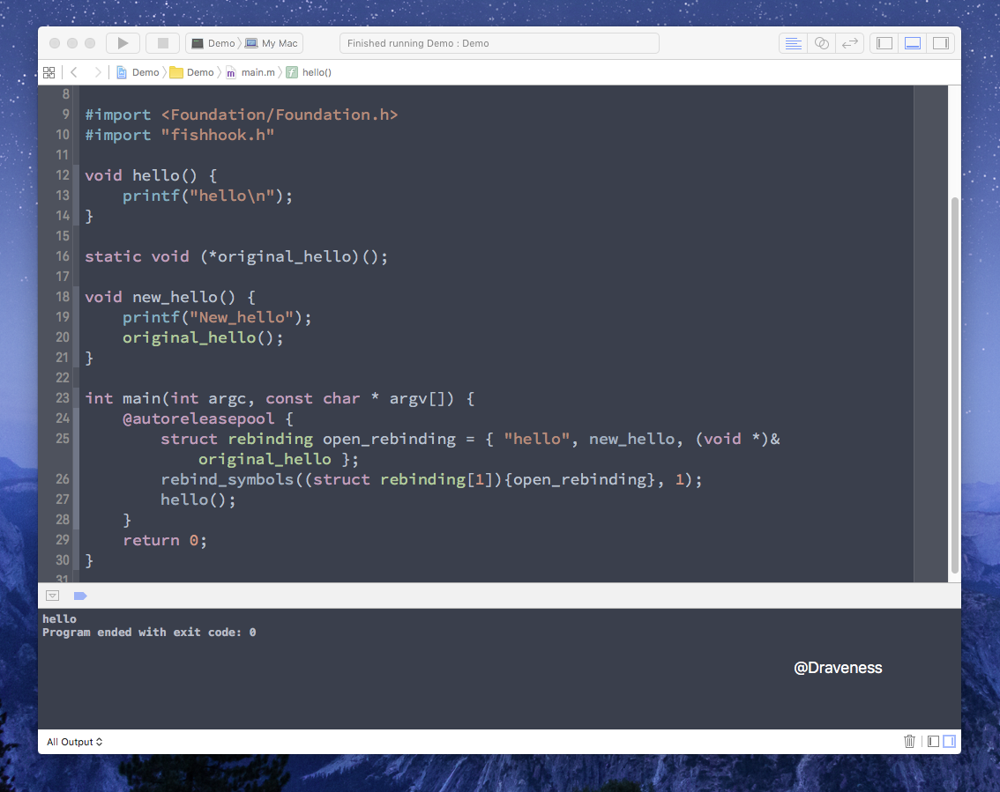
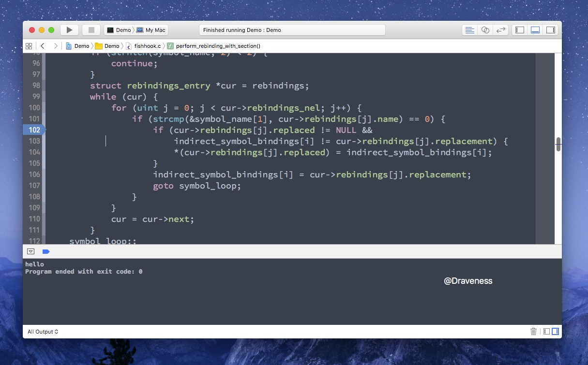

动态修改 C 语言函数的实现
Objective-C 作为基于 Runtime 的语言，它有非常强大的动态特性，可以在运行期间自省、进行方法调剂、为类增加属性、修改消息转发链路，在代码运行期间通过 Runtime 几乎可以修改 Objecitve-C 层的一切类、方法以及属性。
真正绝对意义上的动态语言或者静态语言是不存在的。
C 语言往往会给我们留下不可修改的这一印象；在之前的几年时间里，笔者确实也是这么认为的，然而最近接触到的 fishhook 使我对 C 语言的不可修改有了更加深刻的理解。
在文章中涉及到一个比较重要的概念，就是镜像（image）；在 Mach-O 文件系统中，所有的可执行文件、dylib 以及 Bundle 都是镜像。
fishhook 简介
到这里，我们该简单介绍一下今天分享的 fishhook；fishhook 是一个由 facebook 开源的第三方框架，其主要作用就是动态修改 C 语言函数实现。
这个框架的代码其实非常的简单，只包含两个文件：fishhook.c 以及 fishhook.h；两个文件所有的代码加起来也不超过 300 行。
不过它的实现原理是非常有意思并且精妙的，我们可以从 fishhook 提供的接口中入手。
从接口开始
fishhook 提供非常简单的两个接口以及一个结构体：
struct rebinding {
const char *name;
void *replacement;
void **replaced;
};
int rebind_symbols(struct rebinding rebindings[], size_t rebindings_nel);
int rebind_symbols_image(void *header,
intptr_t slide,
struct rebinding rebindings[],
size_t rebindings_nel);
其中 rebind_symbols 接收一个 rebindings 数组，也就是重新绑定信息，还有就是 rebindings_nel，也就是 rebindings 的个数。
使用 fishhook 修改 C 函数
使用 fishhook 修改 C 函数很容易，我们使用它提供的几个范例来介绍它的使用方法。
这里要修改的是底层的 open 函数的实现，首先在工程中引入 fishhook.h 头文件，然后声明一个与原函数签名相同的函数指针：
#import "fishhook.h"
static int (*origianl_open)(const char *, int, ...);
然后重新实现 new_open 函数：
int new_open(const char *path, int oflag, ...) {
va_list ap = {0};
mode_t mode = 0;
if ((oflag & O_CREAT) != 0) {
// mode only applies to O_CREAT
va_start(ap, oflag);
mode = va_arg(ap, int);
va_end(ap);
printf("Calling real open('%s', %d, %d)\n", path, oflag, mode);
return orig_open(path, oflag, mode);
} else {
printf("Calling real open('%s', %d)\n", path, oflag);
return orig_open(path, oflag, mode);
}
}
这里调用的 original_open 其实相当于执行原 open；最后，在 main 函数中使用 rebind_symbols 对符号进行重绑定：
// 初始化一个 rebinding 结构体
struct rebinding open_rebinding = { "open", new_open, (void *)&original_open };
// 将结构体包装成数组，并传入数组的大小，对原符号 open 进行重绑定
rebind_symbols((struct rebinding[1]){open_rebinding}, 1);
// 调用 open 函数
__unused int fd = open(argv[0], O_RDONLY);
在对符号进行重绑定之后，所有调用 open 函数的地方实际上都会执行 new_open 的实现，也就完成了对 open 的修改。

程序运行之后打印了 Calling real open('/Users/apple/Library/Developer/Xcode/DerivedData/Demo-cdnoozusghmqtubdnbzedzdwaagp/Build/Products/Debug/Demo', 0) 说明我们的对 open 函数的修改达到了预期的效果。
整个 main.m 文件中的代码在文章的最后面 main.m
fishhook 的原理以及实现
在介绍 fishhook 具体实现原理之前，有几个非常重要的知识需要我们了解，那就是 dyld、动态链接以及 Mach-O 文件系统。
dyld 与动态链接
dyld 是 the dynamic link editor 的缩写（笔者并不知道为什么要这么缩写）。至于它的作用，简单一点说，就是负责将各种各样程序需要的镜像加载到程序运行的内存空间中，这个过程发生的时间非常早 --- 在 objc 运行时初始化之前。
在 dyld 加载镜像时，会执行注册过的回调函数；当然，我们也可以使用下面的方法注册自定义的回调函数，同时也会为所有已经加载的镜像执行回调：
extern void _dyld_register_func_for_add_image(
void (*func)(const struct mach_header* mh, intptr_t vmaddr_slide)
);
对于每一个已经存在的镜像，当它被动态链接时，都会执行回调 void (*func)(const struct mach_header* mh, intptr_t vmaddr_slide)，传入文件的 mach_header 以及一个虚拟内存地址 intptr_t。
以一个最简单的 Hello World 程序为例：
#include <stdio.h>
int main(int argc, const char * argv[]) {
printf("Hello, World!\n");
return 0;
}
代码中只引用了一个 stdio 库中的函数 printf；我们如果 Build 这段代码，生成可执行文件之后，使用下面的命令 nm：
$ nm -nm HelloWorld
nm 命令可以查看可执行文件中的符号（对 nm 不熟悉的读者可以在终端中使用 man nm 查看手册）：
(undefined) external _printf (from libSystem)
(undefined) external dyld_stub_binder (from libSystem)
0000000100000000 (__TEXT,__text) [referenced dynamically] external __mh_execute_header
0000000100000f50 (__TEXT,__text) external _main
在可执行文件中的符号列表中，_printf 这个符号是未定义（undefined）的，换句话说，编译器还不知道这个符号对应什么东西。
但是，如果在文件中加入一个 C 函数 hello_world：
#include <stdio.h>
void hello_world() {
printf("Hello, World!\n");
}
int main(int argc, const char * argv[]) {
printf("Hello, World!\n");
return 0;
}
在构建之后，同样使用 nm 查看其中的符号：
(undefined) external _printf (from libSystem)
(undefined) external dyld_stub_binder (from libSystem)
0000000100000000 (__TEXT,__text) [referenced dynamically] external __mh_execute_header
0000000100000f30 (__TEXT,__text) external _hello_world
0000000100000f50 (__TEXT,__text) external _main
我们的符号 _hello_world 并不是未定义的（undefined），它包含一个内存地址以及 __TEXT 段。也就是说手写的一些函数，在编译之后，其地址并不是未定义的，这一点对于之后分析 fishhook 有所帮助。
使用 nm 打印出的另一个符号 dyld_stub_binder 对应另一个同名函数。dyld_stub_binder 会在目标符号（例如 printf）被调用时，将其链接到指定的动态链接库 libSystem，再执行 printf 的实现（printf 符号位于 __DATA 端中的 lazy 符号表中）：

每一个镜像中的 __DATA 端都包含两个与动态链接有关的表，其中一个是 __nl_symbol_ptr，另一个是 __la_symbol_ptr：
__nl_symbol_ptr中的 non-lazy 符号是在动态链接库绑定的时候进行加载的__la_symbol_ptr中的符号会在该符号被第一次调用时，通过 dyld 中的dyld_stub_binder过程来进行加载
0000000100001010 dq 0x0000000100000f9c ; XREF=0x1000002f8, imp___stubs__printf
地址 0x0000000100000f9c 就是 printf 函数打印字符串实现的位置：

在上述代码调用 printf 时，由于符号是没有被加载的，就会通过 dyld_stub_binder 动态绑定符号。
Mach-O
由于文章中会涉及一些关于 Mach-O 文件格式的知识，所以在这里会简单介绍一下 Mach-O 文件格式的结构。
每一个 Mach-O 文件都会被分为不同的 Segments，比如 __TEXT, __DATA, __LINKEDIT：

这也就是 Mach-O 中的 segment_command（32 位与 64 位不同）：
struct segment_command_64 { /* for 64-bit architectures */
uint32_t cmd; /* LC_SEGMENT_64 */
uint32_t cmdsize; /* includes sizeof section_64 structs */
char segname[16]; /* segment name */
uint64_t vmaddr; /* memory address of this segment */
uint64_t vmsize; /* memory size of this segment */
uint64_t fileoff; /* file offset of this segment */
uint64_t filesize; /* amount to map from the file */
vm_prot_t maxprot; /* maximum VM protection */
vm_prot_t initprot; /* initial VM protection */
uint32_t nsects; /* number of sections in segment */
uint32_t flags; /* flags */
};
而每一个 segment_command 中又包含了不同的 section：
struct section_64 { /* for 64-bit architectures */
char sectname[16]; /* name of this section */
char segname[16]; /* segment this section goes in */
uint64_t addr; /* memory address of this section */
uint64_t size; /* size in bytes of this section */
uint32_t offset; /* file offset of this section */
uint32_t align; /* section alignment (power of 2) */
uint32_t reloff; /* file offset of relocation entries */
uint32_t nreloc; /* number of relocation entries */
uint32_t flags; /* flags (section type and attributes)*/
uint32_t reserved1; /* reserved (for offset or index) */
uint32_t reserved2; /* reserved (for count or sizeof) */
uint32_t reserved3; /* reserved */
};
你只需要对这几个概念有一个简单的了解，知道它们有怎样的包含关系，当文章中跳出这个名字时，对它不是一无所知就足够了，这里并不会涉及太多相关的知识。
fishhook 的原理
到目前为止，我们对 dyld 以及 Mach-O 有了一个初步的了解，而 fishhook 使用了前面章节提到的 _dyld_register_func_for_add_image 注册了一个回调，在每次加载镜像到程序中执行回调，动态修改 C 函数实现。
在具体分析其源代码之前，先为各位读者详细地介绍它的实现原理：
dyld 通过更新 Mach-O 二进制文件 __DATA 段中的一些指针来绑定 lazy 和 non-lazy 的符号；而 fishhook 先确定某一个符号在 __DATA 段中的位置，然后保存原符号对应的函数指针，并使用新的函数指针覆盖原有符号的函数指针，实现重绑定。
整个过程可以用这么一张图来表示：

原理看起来还是很简单的，其中最复杂的部分就是从二进制文件中寻找某个符号的位置，在 fishhook 的 README 中，有这样一张图：

这张图初看很复杂，不过它演示的是寻找符号的过程，我们根据这张图来分析一下这个过程：
- 从
__DATA段中的 lazy 符号指针表中查找某个符号，获得这个符号的偏移量1061，然后在每一个section_64中查找reserved1，通过这两个值找到 Indirect Symbol Table 中符号对应的条目 - 在 Indirect Symbol Table 找到符号表指针以及对应的索引
16343之后，就需要访问符号表 - 然后通过符号表中的偏移量，获取字符串表中的符号
_close
fishhook 的实现
上面梳理了寻找符号的过程，现在，我们终于要开始分析 fishhook 的源代码，看它是如何一步一步替换原有函数实现的。
对实现的分析会 rebind_symbols 函数为入口，首先看一下函数的调用栈：
int rebind_symbols(struct rebinding rebindings[], size_t rebindings_nel);
└── extern void _dyld_register_func_for_add_image(void (*func)(const struct mach_header* mh, intptr_t vmaddr_slide));
static void _rebind_symbols_for_image(const struct mach_header *header, intptr_t slide)
└── static void rebind_symbols_for_image(struct rebindings_entry *rebindings, const struct mach_header *header, intptr_t slide)
└── static void perform_rebinding_with_section(struct rebindings_entry *rebindings, section_t *section, intptr_t slide, nlist_t *symtab, char *strtab, uint32_t *indirect_symtab)
其实函数调用栈非常简单，因为整个库中也没有几个函数，rebind_symbols 作为接口，其主要作用就是注册一个函数并在镜像加载时回调：
int rebind_symbols(struct rebinding rebindings[], size_t rebindings_nel) {
int retval = prepend_rebindings(&_rebindings_head, rebindings, rebindings_nel);
if (retval < 0) return retval;
if (!_rebindings_head->next) {
_dyld_register_func_for_add_image(_rebind_symbols_for_image);
} else {
uint32_t c = _dyld_image_count();
for (uint32_t i = 0; i < c; i++) {
_rebind_symbols_for_image(_dyld_get_image_header(i), _dyld_get_image_vmaddr_slide(i));
}
}
return retval;
}
在 rebind_symbols 最开始执行时，会先调用一个 prepend_rebindings 的函数，将整个 rebindings 数组添加到 _rebindings_head 这个私有数据结构的头部：
static int prepend_rebindings(struct rebindings_entry **rebindings_head,
struct rebinding rebindings[],
size_t nel) {
struct rebindings_entry *new_entry = malloc(sizeof(struct rebindings_entry));
if (!new_entry) {
return -1;
}
new_entry->rebindings = malloc(sizeof(struct rebinding) * nel);
if (!new_entry->rebindings) {
free(new_entry);
return -1;
}
memcpy(new_entry->rebindings, rebindings, sizeof(struct rebinding) * nel);
new_entry->rebindings_nel = nel;
new_entry->next = *rebindings_head;
*rebindings_head = new_entry;
return 0;
}
也就是说每次调用的 rebind_symbols 方法传入的 rebindings 数组以及数组的长度都会以 rebindings_entry 的形式添加到 _rebindings_head 这个私有链表的首部：
struct rebindings_entry {
struct rebinding *rebindings;
size_t rebindings_nel;
struct rebindings_entry *next;
};
static struct rebindings_entry *_rebindings_head;
这样可以通过判断 _rebindings_head->next 的值来判断是否为第一次调用，然后使用 _dyld_register_func_for_add_image 将 _rebind_symbols_for_image 注册为回调或者为所有存在的镜像单独调用 _rebind_symbols_for_image：
static void _rebind_symbols_for_image(const struct mach_header *header, intptr_t slide) {
rebind_symbols_for_image(_rebindings_head, header, slide);
}
_rebind_symbols_for_image 只是对另一个名字非常相似的函数 rebind_symbols_for_image 的封装，从这个函数开始，就到了重绑定符号的过程；不过由于这个方法的实现比较长，具体分析会分成三个部分并省略一些不影响理解的代码：
static void rebind_symbols_for_image(struct rebindings_entry *rebindings,
const struct mach_header *header,
intptr_t slide) {
segment_command_t *cur_seg_cmd;
segment_command_t *linkedit_segment = NULL;
struct symtab_command* symtab_cmd = NULL;
struct dysymtab_command* dysymtab_cmd = NULL;
uintptr_t cur = (uintptr_t)header + sizeof(mach_header_t);
for (uint i = 0; i < header->ncmds; i++, cur += cur_seg_cmd->cmdsize) {
cur_seg_cmd = (segment_command_t *)cur;
if (cur_seg_cmd->cmd == LC_SEGMENT_ARCH_DEPENDENT) {
if (strcmp(cur_seg_cmd->segname, SEG_LINKEDIT) == 0) {
linkedit_segment = cur_seg_cmd;
}
} else if (cur_seg_cmd->cmd == LC_SYMTAB) {
symtab_cmd = (struct symtab_command*)cur_seg_cmd;
} else if (cur_seg_cmd->cmd == LC_DYSYMTAB) {
dysymtab_cmd = (struct dysymtab_command*)cur_seg_cmd;
}
}
...
}
这部分的代码主要功能是从镜像中查找 linkedit_segment symtab_command 和 dysymtab_command；在开始查找之前，要先跳过 mach_header_t 长度的位置，然后将当前指针强转成 segment_command_t，通过对比 cmd 的值，来找到需要的 segment_command_t。
在查找了几个关键的 segment 之后，我们可以根据几个 segment 获取对应表的内存地址：
static void rebind_symbols_for_image(struct rebindings_entry *rebindings, const struct mach_header *header, intptr_t slide) {
...
uintptr_t linkedit_base = (uintptr_t)slide + linkedit_segment->vmaddr - linkedit_segment->fileoff;
nlist_t *symtab = (nlist_t *)(linkedit_base + symtab_cmd->symoff);
char *strtab = (char *)(linkedit_base + symtab_cmd->stroff);
uint32_t *indirect_symtab = (uint32_t *)(linkedit_base + dysymtab_cmd->indirectsymoff);
...
}
在 linkedit_segment 结构体中获得其虚拟地址以及文件偏移量，然后通过一下公式来计算当前 __LINKEDIT 段的位置：
slide + vmaffr - fileoff
类似地，在 symtab_command 中获取符号表偏移量和字符串表偏移量，从 dysymtab_command 中获取间接符号表（indirect symbol table）偏移量，就能够获得符号表、字符串表以及间接符号表的引用了。
- 间接符号表中的元素都是
uint32_t *，指针的值是对应条目n_list在符号表中的位置 符号表中的元素都是
nlist_t结构体，其中包含了当前符号在字符串表中的下标struct nlist_64 { union { uint32_t n_strx; /* index into the string table */ } n_un; uint8_t n_type; /* type flag, see below */ uint8_t n_sect; /* section number or NO_SECT */ uint16_t n_desc; /* see <mach-o/stab.h> */ uint64_t n_value; /* value of this symbol (or stab offset) */ };字符串表中的元素是
char字符
该函数的最后一部分就开启了遍历模式，查找整个镜像中的 SECTION_TYPE 为 S_LAZY_SYMBOL_POINTERS 或者 S_NON_LAZY_SYMBOL_POINTERS 的 section，然后调用下一个函数 perform_rebinding_with_section 来对 section 中的符号进行处理：
static void perform_rebinding_with_section(struct rebindings_entry *rebindings, section_t *section, intptr_t slide, nlist_t *symtab, char *strtab, uint32_t *indirect_symtab) {
uint32_t *indirect_symbol_indices = indirect_symtab + section->reserved1;
void **indirect_symbol_bindings = (void **)((uintptr_t)slide + section->addr);
for (uint i = 0; i < section->size / sizeof(void *); i++) {
uint32_t symtab_index = indirect_symbol_indices[i];
uint32_t strtab_offset = symtab[symtab_index].n_un.n_strx;
char *symbol_name = strtab + strtab_offset;
struct rebindings_entry *cur = rebindings;
while (cur) {
for (uint j = 0; j < cur->rebindings_nel; j++) {
if (strcmp(&symbol_name[1], cur->rebindings[j].name) == 0) {
if (cur->rebindings[j].replaced != NULL &&
indirect_symbol_bindings[i] != cur->rebindings[j].replacement) {
*(cur->rebindings[j].replaced) = indirect_symbol_bindings[i];
}
indirect_symbol_bindings[i] = cur->rebindings[j].replacement;
goto symbol_loop;
}
}
cur = cur->next;
}
symbol_loop:;
}
}
该函数的实现的核心内容就是将符号表中的 symbol_name 与 rebinding 中的名字 name 进行比较，如果出现了匹配，就会将原函数的实现传入 origian_open 函数指针的地址，并使用新的函数实现 new_open 代替原实现：
if (cur->rebindings[j].replaced != NULL &&
indirect_symbol_bindings[i] != cur->rebindings[j].replacement) {
*(cur->rebindings[j].replaced) = indirect_symbol_bindings[i]; // 将原函数的实现传入 original_open 函数指针的地址
}
indirect_symbol_bindings[i] = cur->rebindings[j].replacement; // 使用新的函数实现 new_open 替换原实现
如果你理解了上面的实现代码，该函数的其它代码就很好理解了：
- 通过
indirect_symtab + section->reserved1获取indirect_symbol_indices *，也就是符号表的数组 - 通过
(void **)((uintptr_t)slide + section->addr)获取函数指针列表indirect_symbol_bindings - 遍历符号表数组
indirect_symbol_indices *中的所有符号表中，获取其中的符号表索引symtab_index - 通过符号表索引
symtab_index获取符号表中某一个n_list结构体，得到字符串表中的索引symtab[symtab_index].n_un.n_strx - 最后在字符串表中获得符号的名字
char *symbol_name
到这里比较前的准备工作就完成了，剩下的代码会遍历整个 rebindings_entry 数组，在其中查找匹配的符号，完成函数实现的替换：
while (cur) {
for (uint j = 0; j < cur->rebindings_nel; j++) {
if (strcmp(&symbol_name[1], cur->rebindings[j].name) == 0) {
if (cur->rebindings[j].replaced != NULL &&
indirect_symbol_bindings[i] != cur->rebindings[j].replacement) {
*(cur->rebindings[j].replaced) = indirect_symbol_bindings[i];
}
indirect_symbol_bindings[i] = cur->rebindings[j].replacement;
goto symbol_loop;
}
}
cur = cur->next;
}
在之后对某一函数的调用（例如 open），当查找其函数实现时，都会查找到 new_open 的函数指针；在 new_open 调用 origianl_open 时，同样也会执行原有的函数实现，因为我们通过 *(cur->rebindings[j].replaced) = indirect_symbol_bindings[i] 将原函数实现绑定到了新的函数指针上。
实验
fishhook 在 dyld 加载镜像时，插入了一个回调函数，交换了原有函数的实现；但是 fishhook 能否修改非动态链接库，比如开发人员自己手写的函数呢？我们可以做一个非常简单的小实验，下面是我们的 main.m 文件：
#import <Foundation/Foundation.h>
#import "fishhook.h"
void hello() {
printf("hello\n");
}
static void (*original_hello)();
void new_hello() {
printf("New_hello\n");
original_hello();
}
int main(int argc, const char * argv[]) {
@autoreleasepool {
struct rebinding open_rebinding = { "hello", new_hello, (void *)&original_hello };
rebind_symbols((struct rebinding[1]){open_rebinding}, 1);
hello();
}
return 0;
}
这里的函数实现非常的简单，相信也不需要笔者过多解释了，我们直接运行这份代码：

代码中只打印了 hello，说明 fishhook 对这种手写的函数是没有作用的，如果在下面这里打一个断点：

代码并不会进这里，因为 hello 这个函数是包含在当前镜像的，它只是从当前镜像的其它代码地址跳转到了当前函数实现，只是一个普通的跳转;这与我们调用外部库时有很大的不同，当调用外部库时，我们需要 dyld 解决函数地址的问题，但是函数在当前镜像中却并不需要 issue #25。
fishhook can only hook functions that exist in other libraries. It cannot hook functions that exist in the same image (library or executable) as your currently running code.
The reason for this is that there's no indirection that happens when you call a function in your own executable. It's just a plain jump to another code address in your executable.
That's very different from calling a function in an external library, where your executable uses dyld to figure out the address of the function being called before jumping to it.
小结
fishhook 的实现非常的巧妙，但是它的使用也有一定的局限性，在接触到 fishhook 之前，从没有想到过可以通过一种方式修改 C 函数的实现。
Reference
其它
main.m
#import <Foundation/Foundation.h>
#import "fishhook.h"
static int (*original_open)(const char *, int, ...);
int new_open(const char *path, int oflag, ...) {
va_list ap = {0};
mode_t mode = 0;
if ((oflag & O_CREAT) != 0) {
// mode only applies to O_CREAT
va_start(ap, oflag);
mode = va_arg(ap, int);
va_end(ap);
printf("Calling real open('%s', %d, %d)\n", path, oflag, mode);
return original_open(path, oflag, mode);
} else {
printf("Calling real open('%s', %d)\n", path, oflag);
return original_open(path, oflag, mode);
}
}
int main(int argc, const char * argv[]) {
@autoreleasepool {
struct rebinding open_rebinding = { "open", new_open, (void *)&original_open };
rebind_symbols((struct rebinding[1]){open_rebinding}, 1);
__unused int fd = open(argv[0], O_RDONLY);
}
return 0;
}